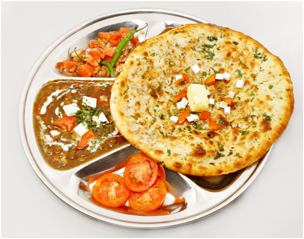
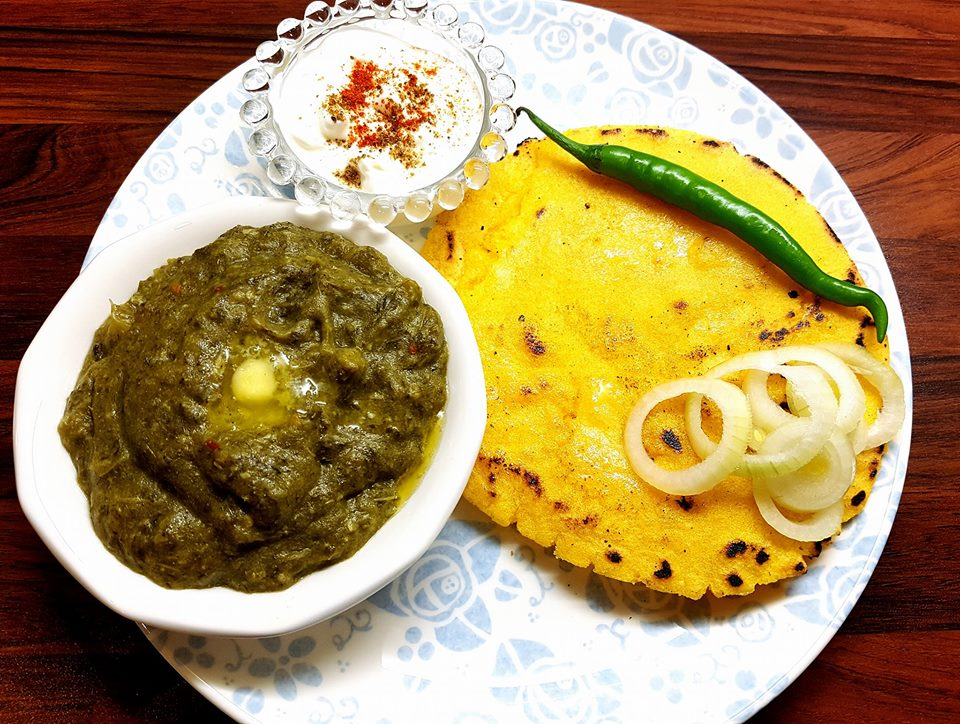
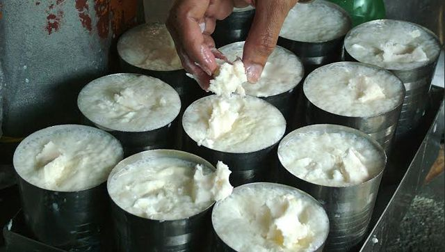
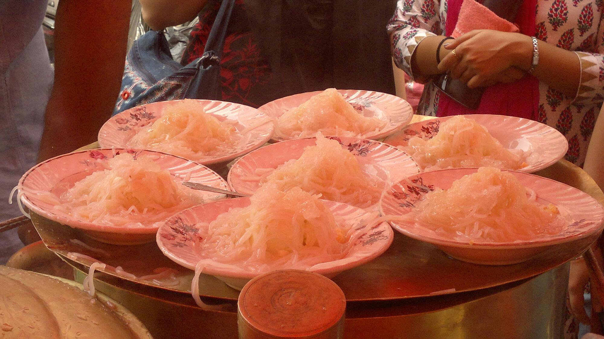
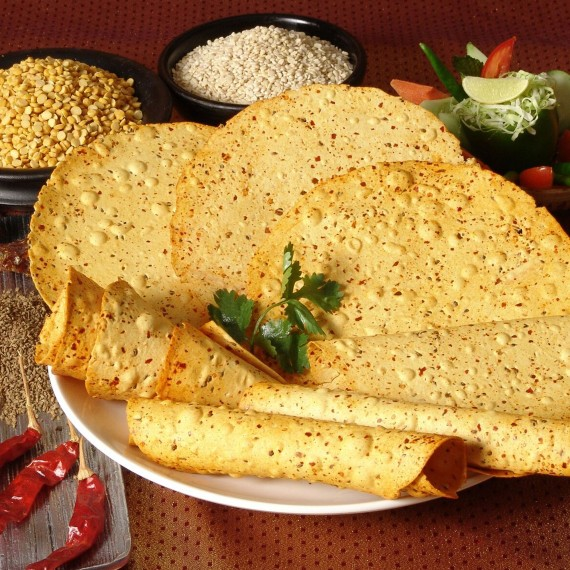

AMRITSAR FAMOUS FOOD
This is definitely true in the case of Punjabis who are true gourmets. To them food is everything, and no one can savor the fatty delicacies in all its true splendor like a Punjabi does! The culinary capital of India- Amritsar is a proof of this fact. The home to the iconic Golden Temple is also home to the best food in the world. Everything in this city revolves around food- be it socializing, prayer or festivals. Kulchas, lassi, jalebi, you name it and it will be found in Amritsar.
1. Langar Ka Prasad

When in Amritsar, start out with the Golden Temple. The best time to visit is during the morning when the Guru Granth Sahib is brought to the inner sanctum. After offering your prayers, head over to the langar, the largest free kitchen in the world! The volunteers here cook and serve a simple meal of dal, roti, sabzi and kheer to lakhs of devotees each day. Even if you don’t have the time for langar, don’t leave the Kara Prasad on your way out. You will have to jostle among a large crowd for this ghee-laden delicacy but a bite of it will prove to be totally worth it!
2. All India Famous Amritsari Kulcha

Amritsar is synonymous with Kulchas, the maida bread baked in a tandoor. Located beside the Golden Temple and the Wagah Border, the All India Famous is a place to have the butter drenched, potato and cauliflower stuffed kulcha. Touted by some to be a foodie’s pilgrimage spot, this place has been serving just kulchas over the many years of its existence. You can have kulchas for all your meals of the day here and each of it will be an experience incomparable to the other. They serve kulcha alongside chana masala, sliced onions and tamarind chutney. It is a perfect place for breakfast or lunch since they tend to run out of kulchas by 2 pm!!
3. Sarson Da Saag & Makke Ki Roti

Sarson Da Saag (as it is known in Punjabi) or (Sarson Ka Saag, in Hindi, Urdu) is a popular vegetarian dish from the Punjab region of South Asia. It is made from mustard greens (sarson) and spices such as garam masala, ginger and garlic. It is often served with makki di roti. The dish is regarded as the traditional way to prepare saag and is usually served with makki di roti (literally "unleavened cornbread". It can be topped with either Makkhan (unprocessed white butter or processed yellow butter) or more traditionally with ghee (clarified butter). Some spinach (called palak in Hindi) may be added to enhance colour and thicken the dish, though this may alter the flavor. Also added some bathua, sarson greens, onion, tomato and all ground spice. Mustard is a winter and spring delicacy, and its relative abundance in Punjab has made it one of the most popular dishes in those regions.
4. Amritsari lassi

Amritsari Lassi is a beverage made with yogurt and water. It a traditional yogurt drink that originated from Punjab. Amritsari lassi is a traditional sweet lassi which originated from the city of Amritsar in Punjab and has been famous and popular all over since over a century. It is prepared in a traditional way using a hand churner called madhani and dollops of thick fresh cream and homemade butter are added to the frothy lassi which earlier used to be served in tall, big and heavy brass glasses. Check out my video above for step by step guidance and tips to prepare this delectable sweet lassi which you will relish for long.
5. Amritsari kulfi

Kulfi is a frozen dairy dessert originating from the Indian subcontinent in the 16th century. It is often described as "traditional Indian ice cream. It is popular throughout India, Sri Lanka, Pakistan, Bangladesh, Nepal, Burma (Myanmar), and the Middle East, and widely available in restaurants serving cuisines from the Indian subcontinent around the world. Kulfi has similarities to ice cream in appearance and taste; however it is denser and creamier. It comes in various flavours. The more traditional ones are cream (malai), rose, mango, cardamom (elaichi), saffron (kesar or zafran), and pistachio. There are newer variations such as apple, orange, strawberry, peanut, and avocado. Unlike ice cream, kulfi is not whipped, resulting in a solid, dense frozen dessert similar to traditional custard-based ice cream. Thus, it is sometimes considered a distinct category of frozen dairy-based dessert. Due to its density, kulfi takes a longer time to melt than Western ice cream.
6. Amritsar de pappad

Amritsari Papad or papar is a variety of the papad snack specific to the north Indian state of Punjab and the surrounding region, and even more specific to the city of Amritsar. Amritsari papad is famous throughout India, and is also exported abroad. Like papad elsewhere in India, Amritsari papad is made from seasoned dough, usually of hulled urad daal flour, seasoned liberally with salt, black pepper, heeng (asafoetida), cumin, coriander, pomegranate seeds, and sometimes garlic. The proportions are highly variable, leading to a large variety in taste and pungency. The dough is rolled into wafer thin discs the size of a small plate, and sun-dried to prepare raw papad. Flours from other sources such as lentils, chickpeas, rice, tapioca or potato, are sometimes used. Dried papad will keep for several months without refrigeration. Although now done by machines, papad was traditionally rolled out by hand, requiring a fair amount of force because of the dryness of the dough -- indeed, In Hindi and Punjabi, "papad belna" (rolling out papad) is still a metaphor for any laborious or arduous task. Papad is prepared by roasting in an oven or on an open flame, and because it is so thin and dry, takes but a fraction of a minute to be done. In Punjab, it is typically served as an accompaniment to a meal after roasting in an oven or on an open flame, but elsewhere in India it is also eaten as an appetizer or snack, with toppings such as chopped onions, carrots, chutney or other dips and condiments. Papad is a low calorie food but has a high sodium content.